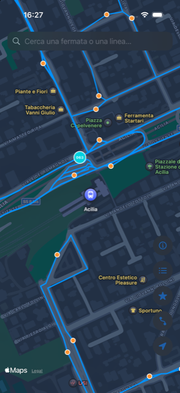
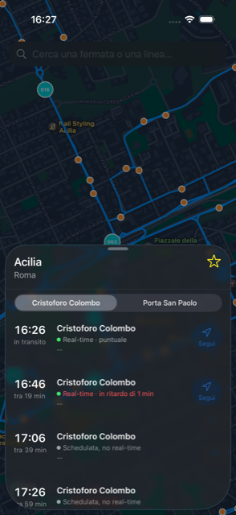
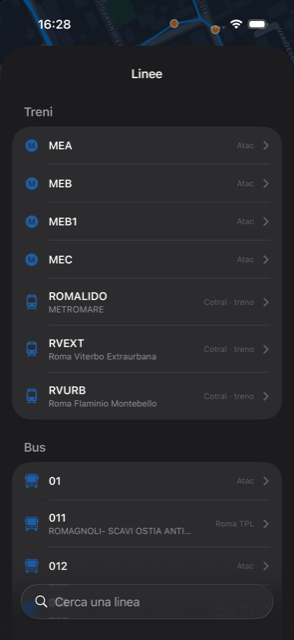

"Madovai" — ma dove vai?
Cotral (bus e treni extraurbani) e Atac/Roma TPL (trasporto urbano di Roma) insieme, in tempo reale: posizione dei mezzi, orari, ritardi. Niente account, niente configurazione — si apre e si usa.
Gratuita, open source. Richiede SideStore o AltStore per l'installazione (nessun App Store, per ora).

Cosa fa
Madovai unisce due reti di trasporto che di solito vivono in due app diverse, e le mostra come se fossero una sola.
Cotral (extraurbano, tutta la provincia) e Atac/Roma TPL (urbano) sulla stessa mappa, senza dover cambiare app a seconda di dove ti trovi.
Vedi dove si trova davvero il tuo bus o treno in questo momento, non solo l'orario a tabella.
"In ritardo di 4 min" o "in anticipo di 2 min", scritto in modo semplice — non un codice o un numero grezzo.
Cerca una fermata o una linea per nome. Quando manca il tempo reale, l'app mostra comunque l'orario programmato.
Come si presenta
Nessun account da creare, nessuna schermata di login: si apre l'app e si vede subito la mappa.


Installazione
Madovai non è ancora sull'App Store. Per installarla oggi serve un piccolo passaggio in più — niente di complicato, si fa una volta sola.
L'app viene distribuita come file .ipa (il formato delle app iOS) e si installa con SideStore o AltStore: strumenti gratuiti che permettono di installare app fuori dall'App Store usando solo il tuo Apple ID, senza jailbreak.
Perché non l'App Store? Pubblicarci richiede un account sviluppatore Apple a pagamento (99$/anno). Non è escluso in futuro — per ora questa è la via gratuita.